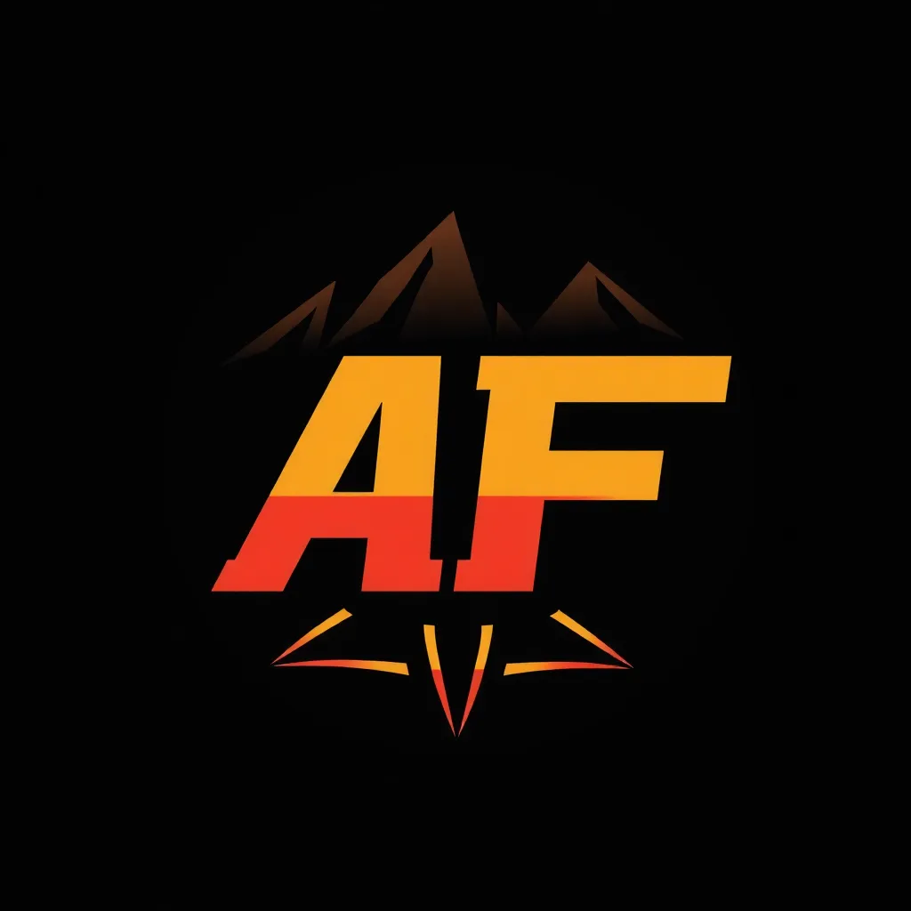
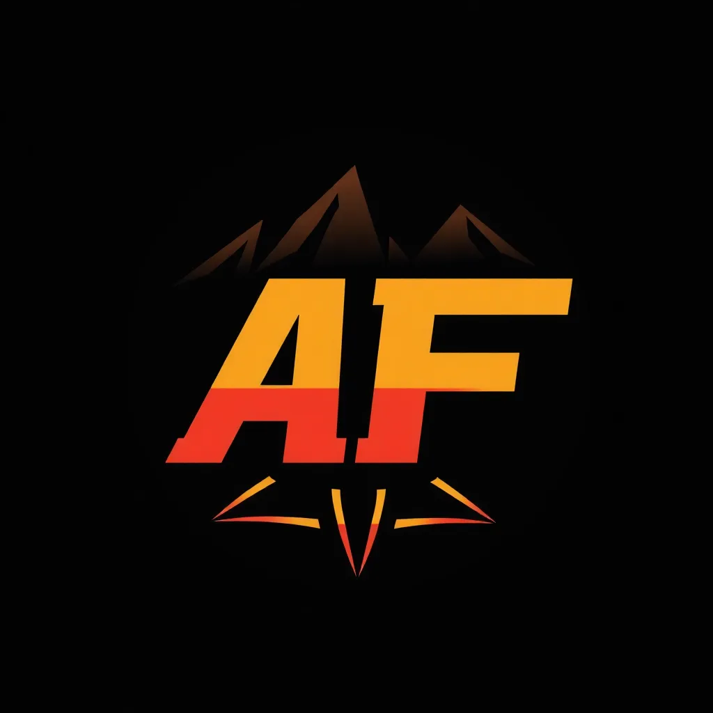

Garapan Airdrop
Garapan Airdrop
Di bawah ini adalah list airdrop yang berpotensi
PAWS
BLUM
Nodepay
Gardient
BlockMash
Airdrop dalam dunia cryptocurrency adalah sebuah metode distribusi token atau koin secara gratis
kepada sejumlah pengguna tertentu. Tujuan utama dari airdrop adalah untuk memperkenalkan
proyek cryptocurrency baru kepada komunitas, meningkatkan kesadaran, dan memberikan insentif
kepada pengguna untuk berpartisipasi dalam proyek tersebut. Biasanya, proyek crypto akan
memberikan token gratis kepada orang-orang yang memenuhi syarat tertentu, seperti mengikuti
akun media sosial, bergabung dengan grup Telegram, atau mendaftar di platform mereka.